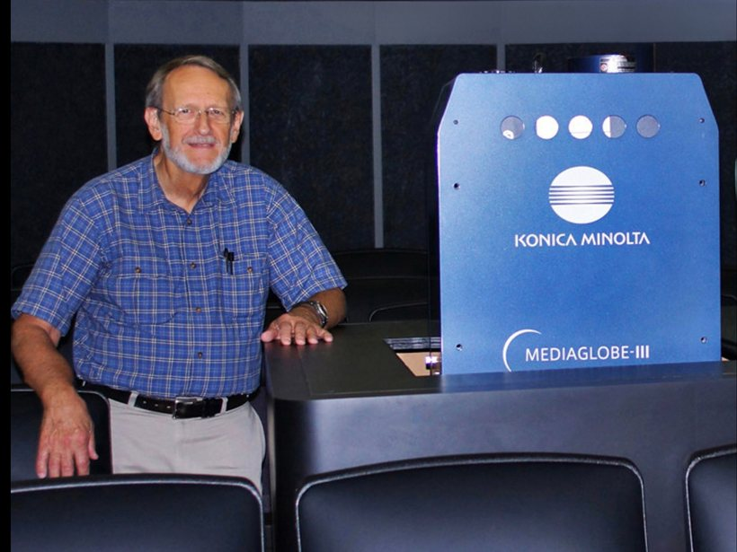

John Carl Pogue

John Pogue was born in Port Arthur, Texas, and graduated from Stephen F. Austin High School in 1959. Mr. Pogue received a Bachelor of Science degree with a major in mathematics, minor in chemistry, and obtained teacher certification from East Texas Baptist College in 1963. He received his Master of Education degree from the University of North Texas in 1969 with a major in School Supervision and a Math/Physics minor.
During his early career as a math and physics teacher, Mr. Pogue participated in the associated professional organizations such as the Texas State Teachers Association (was a Local President in 1965), the National Council of Teachers of Mathematics, and the National Science Teachers Association.
After teaching in the Everman ISD for three years and the Hurst-Euless-Bedford ISD for seven years, Mr. Pogue was appointed by GPISD as planetarium director and came to the Grand Prairie Independent School District in the summer of 1973. Mr. Pogue developed and presented curriculum-based planetarium lessons to students throughout the district and taught an astronomy class for students at South Grand Prairie High School. He also produced or procured public planetarium presentations for the citizens of Grand Prairie and for special groups such as scouts, school organizations, and civic organizations.
During his tenure as planetarium director, Mr. Pogue was also active in planetarium-related professional organizations including the Southwestern Association of Planetariums and the International Planetarium Society. He was selected to be the Southwestern Association’s representative to the International group’s executive board, served in that position for eight years, and was awarded the title of Fellow of the International Planetarium Society. Mr. Pogue was elected as President-Elect of the International Planetarium Society, and after that two-year position served as that organization’s president for two years. As a member of the International Planetarium Society’s executive council and as president-elect and president, Mr. Pogue traveled to conferences and visited planetariums and museums in many of the U.S. States, Canada, Mexico, and Europe.
After retiring from the GPISD in 1993, Mr. Pogue worked for ten years as the senior project staff field representative for the Texas Federation of Teachers. He also was elected for three terms to the Grand Prairie ISD Board of Education (1994–2003) and served as its secretary, vice-president, and president during that time. In November of 2004, the GPISD Board of Education renamed the district’s planetarium the John Carl Pogue Planetarium.
From 2005 through 2008, Mr. Pogue worked first as a volunteer, then as a part-time employee for the Comanche Springs Astronomy Campus in west Texas where he assisted with public star parties and teacher workshops. With the passage of a bond election in 2011 that provided funds for district improvements and expansions, the district decided to update the nearly forty-year old planetarium. Mr. Pogue served on the equipment replacement selection committee and as an advisor and consultant during the remodeling and expansion of the planetarium facility.